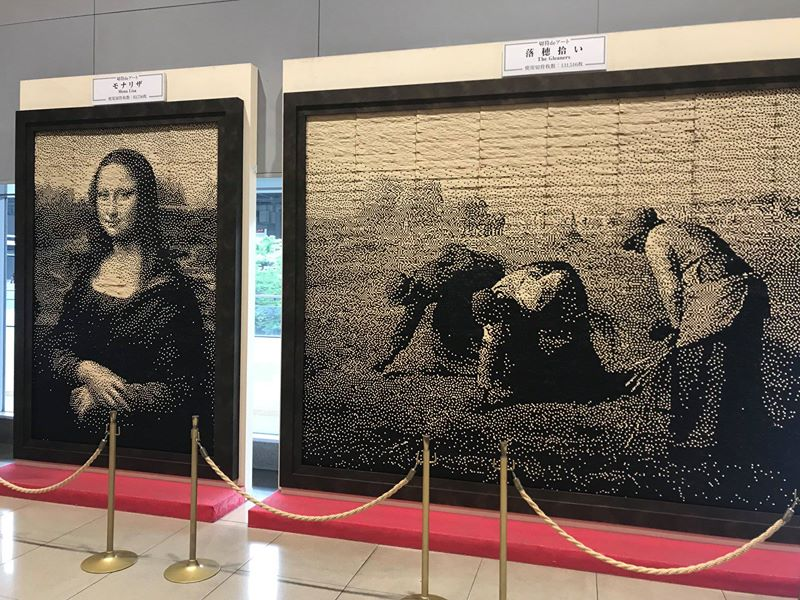
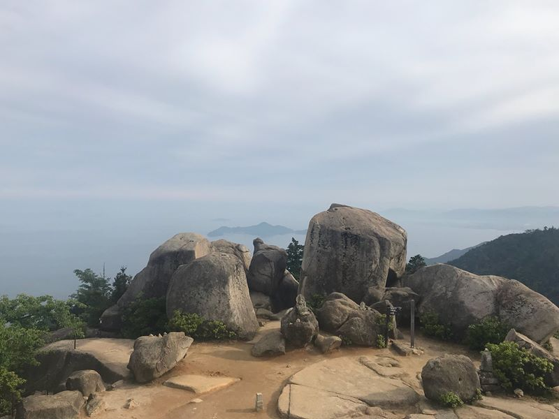
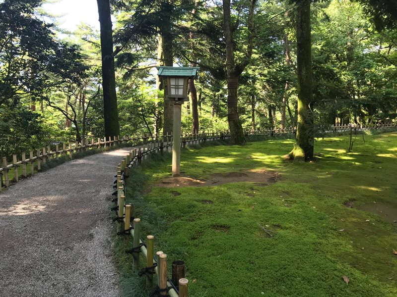
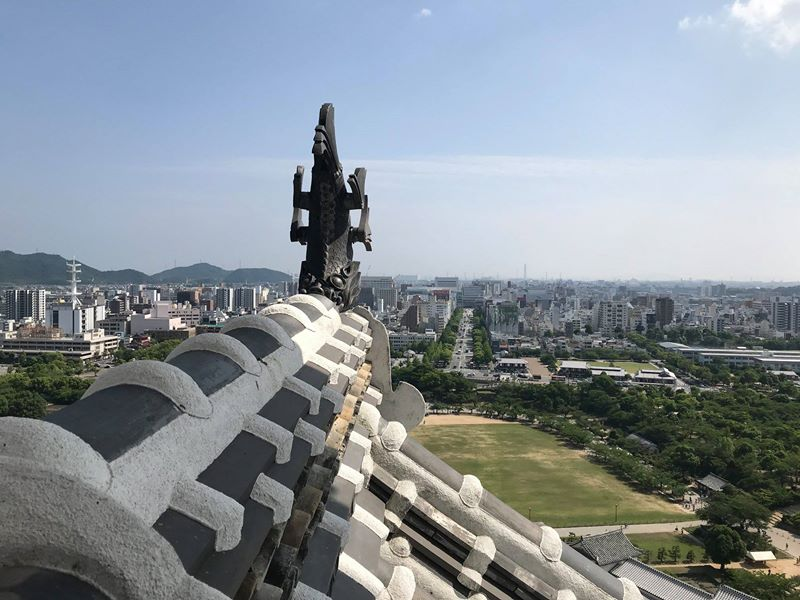
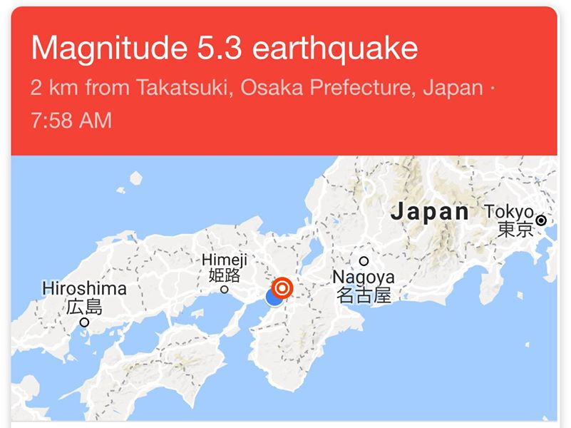
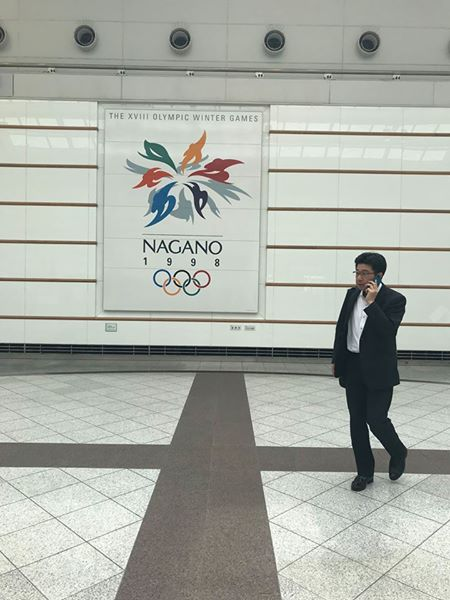
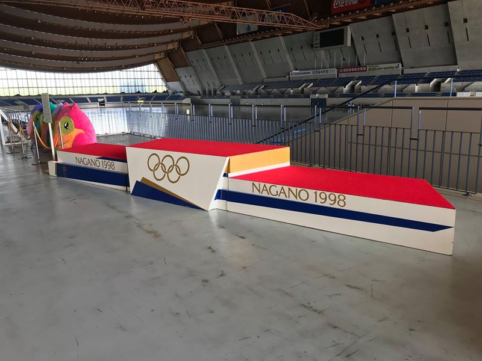
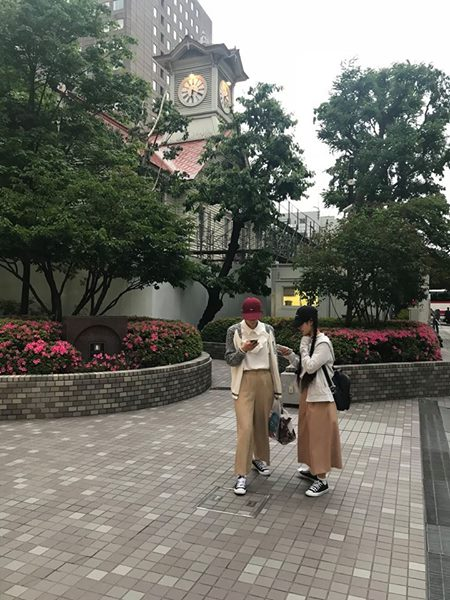
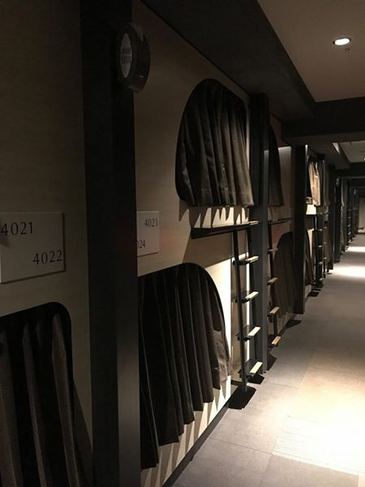
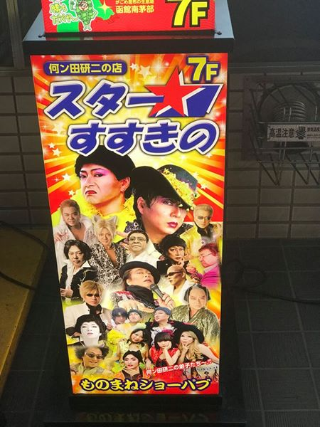

Japonsko - tři týdny od Nagasaki po Sapporo
Třítýdenní cesta po Japonsku. 1. Nagasaki. 2. Fukuoka. 3. Ostrov Mijadžima (Itsukushima). 4. Hirošima. 5. Kanazawa. 6. Himeji. 7. Nara. 8. Nagoya. 9. Nagano. 10. Sapporo.
Japonské ráno začíná jak jinak než tříděním odpadu. Papír, tři koše na různé druhy plastů, zvláštní koš na plechovky, na skleněné láhve, na pet lahve, na dřevo (na hůlky a párátka, na sáčky, na víčka, třídí se všechno. Nejprve se musí odpad umýt, vyčistit, vysušit, musí se odstranit obaly a pak se to konečně může vyhodit...
Cesta na letiště metrem. Dospělí buď spí, nebo hrají na mobilu hry. Děti mobil nemají, ale mají k dispozici velké množství párů uší okolních cestujících.
Když už jsme u toho metra, tak takhle vypadají obrazovky ve vagónech. Každá stanice má svoje číslo, takže víte, že když jste třeba na M16 a máte jet na M20, tak to bude 4. stanice. Také víte, ve kterém čísle vagónu jste, takže se vám hned objeví i orientační plánek stanice, abyste věděli, kam přesně jít.
A jsme na letišti. Pokud chcete vidět Monu Lisu, můžete jet do Louvru, podobně jako ostatní. A nebo jet do Osaky, kde ji uvidíte vytvořenou z 320 000 jízdenek na metro.

Welcome to Nagasaki!
Z letiště je to do centra Nagasaki nějakých 25 km, takže beru autobus. Lístek se koupí jako vše ostatní z automatu. Podobně jako v letadle, v celém letišti, tak i v autobuse jsem jediný, kdo není Japonec. Cizinci do Nagasaki nejezdí vůbec.
Chinatown. Je v každém větším japonském městě.
Přístav Nagasaki. Kousek odtud se staví největší lodě na světě.
Odkladiště tašek před vstupem do obchodu.
Školní výlety jsou vidět úplně všude. Moje zkušenost je taková, že těm se žlutou kšiltovkou je dobré se vyhýbat. Jakmile uvidí Evropana, rozběhnou se za nim a žádají podpis. Všichni, celá třída a třeba i tehdy, když zrovna Evropan jí. Zároveň musíte odpovědět na 4 otázky. Mají to jako domácí úkol.
Jak se pozná japonská restaurace s mořskými plody? No přece tak, že před vstupem do restaurace tam ty ryby plavou.
Kde budu dnes spát? Co třeba něco typicky japonského: kapsulový ho(stel.
Místnost 2x2 metry, kde je jen postel a stahovací roleta. Dostanete k tomu ručník, hygienické potřeby, papuče a dokonce i celé pyžamo, které je mimochodem mimořádně příjemné a už jim ho asi nevrátím.
Kapsule z druhé strany. Máte tam vysokorychlostní internet, dvě zásuvky, klimatizaci a samozřejmě i velkou televizi a k ní sluchátka, protože v kapsule nesmíte vydat ani hlásku.
Procházka po okolí Nagasaki. To hlavní mě čeká ale až zítra, včetně nejděsivějšího muzea na světě.
Druhý den ráno jsem se vydal na místa, kvůli kterým do Nagasaki přijel. Nejprve na Ground Zero, tedy místo, nad kterým 9. 8. 1945 v 11:02 vybuchla atomová bomba.
Jako památník je na místě katedrála Urakami. Nebo tedy to, co z ní zbylo.
Pod Ground Zero je zvláštní vitrína a za ní je část Nagasaki tak, jak zůstalo po atomovém výbuchu.
Hned vedle je muzeum atomové bomby včetně obrovského modelu města, na který se promítá celý průběh událostí 9. srpna.
Model atomové bomby 1:1.
A hned u něj školáci plnící domácí úkoly. Řekl bych, že tak 95% lidí, které v Japonsku člověk potká na turistických místech, jsou japonští školáci ve věku 10 až 15.
Hodiny, které se zastavily přesně v čase výbuchu.
Které země dnes vlastní atomové zbraně? Je jich více a více a zbraně jsou mnohem ničivější než ty, které byly shozeny na Nagasaki.
Memento.
Vedle muzea je Peace park se sochami, které Nagasaki věnovaly různé země.
Jestlipak je tu i socha z … ano! Mezi několika málo sochami je i ta, kterou věnovalo Československo.
A potkal jsem zde i tohoto pána jménem Inosuke Hayasaki, který přežil výbuch atomové bomby nad Nagasaki.
O setkání jsem napsal zde: https://www.facebook.com/DundeeVsSvet/posts/1997339280276265
Druhá strana vizitky, kterou mi dal.
A zde je delší verze jeho příběhu anglicky: http://www.hirosimanagasaki.is/hirosima_speech/plea-of-atomic-bomb-survivor/
Pestrobarevné jeřáby, které je jako symbol míru na mnoha místech Nagasaki.
Chrám Fukusai-ji. Každý den v 11:02 se nad Nagasaki rozezní tenhle zvon.
A kousek od něj socha mnicha, který se dívá …
… na gigantickou sochu Buddhy na želvě.
Vyhlídka na Nagasaki. Prý je to jedna ze tří nejlepších vyhlídek na město z celého Japonska. A jsem tu sám, na celé rozhledně není ani noha.
Nagasaki z druhé strany. Kolem je mnoho ostrovů. Na jednom z nich se natáčel jeden z filmů J. Bonda Skyfall.
Procházka po Nagasaki.
Procházka po Nagasaki.
Sochy v Nagasaki.
Tramvaje v Nagasaki.
Karlův most Japonska. Nejstarší kamenný most v Japonsku.
Kde perou Japonci?
Dost bylo Nagasaki, další zastávka je 150 km vzdálené město na severu Fukuoka. Takhle vypadá kokpit japonských rychlovlaků. Jsou tam tři strojvůdci.
Jeden hlásí, kde jsme a kontroluje, zda může vlak odjet ze stanice.
Druhý sedí na židli a vlak řídí.
A třetí nehnutě stojí celou cestu.
Vedle řízení je časový rozpis, který se striktně dodržuje.
A jsme ve Fukuoce. I takhle může vypadat Japonsko.
Pláže ve Fukuoce.
Opalující se Japonci.
Parky ve Fukuoce.
Parky ve Fukuoce.
Parky ve Fukuoce.
Místo ryb v rybnících plavou želvy.
Sochy ve Fukuoce.
Vyhlídka z ruin hradu. Jsou pod ním dvě hřiště na ragby a baseball, dva velmi oblíbené (možná nejoblíbenější sporty v Japonsku.
V parném poledni jsem seděl na zastávce a přišla za mnou starší Japonka a dala mi vychlazenou vodu. Jen tak. To se mi stalo naposled v Thajsku, když mi dal láhev vody řidič autobusu poté, co mi ji sprostě ukradly opice.
U chrámu Shafukuji, prvního zenového chrámu v Japonsku. Chrám je střežen množstvím koček.
Nákupní centrum, chrám konzumu. Byl jsem zatím ve dvou. V jedním byla obrovská velryba a na střeše ruské kolo, tady ve Fukuoce se zase promítal na pětipatrové centrum a vodotrysky 3D animovaný film. Umí vlastně Japonci postavit normální obchodní centrum jen s obchody? Já myslím, že ne.
Fukuoka je ale známá nočním životem a jídlem. Když jsem se procházel přes red light district, pořád za mnou někdo chodil a volal na mě „six!“ Chvíli jsem přemýšlel, proč na mě volá číslovku 6, ale pak mi došlo, že takhle asi vyslovují „sex!“ Je to jako v Thajsku, jen tu nejsou Afričanky. Šel jsem raději někam na jídlo do typické japonské restaurace, kam se vejde maximálně 5 lidí.
Ramen, jedno z národních japonských jídel. Polévka s nudlemi a lžičkou, kterou se nedají ty nudle nikdy sníst.
Po Nagasaki a Fukuoce byla další zastávka ostrov Mijadžima. Kromě obrovské “plovoucí” torii, brány, je zde taky tisíc jelenů, kteří ochotně pózují fotografům.
Ostrovní fauna podruhé. Za trochu jídla poděkuji a ukloní se.
Brána sloužila jako vstup do svatyně Itsukushima.
Svatyně Itsukushima v době odlivu.
Svatyně Itsukushima zapsaná do Seznamu světového dědictví UNESCO.
Most u svatyně Itsukushima.
Nenáhodné seskupení dřeva na ostrově Mijadžima.
Po necelé hodině u svatyně Itsukushima jsem se rozhodl vyšplhat na vrchol ostrova Mt. Misen. Hned na začátku cesty jsem narazil na úžasný buddhistický klášter Daisho-in.
Daisho-in.
Zenová zahrada v Daisho-in.
Daisho-in.
Daisho-in.
Sochy v Daisho-in.
Sochy v Daisho-in.
Sochy v Daisho-in.
Sochy v Daisho-in.

Sochy v Daisho-in.

Cesta na vrchol.
Ostrovní fauna podruhé.
Pohled pro ty, kteří nejeli lanovkou.
Nekonečné množství schodů na vrchol.
Jedna z bran při cestě na vrchol.
Svatyně Misen.
Svatyně Misen.
Svatyně Misen.
Výhledy po cestě na vrchol.
Vrchol Mt Misen, konečně!

Rozhledna byla už bohužel hodinu zavřená, protože jsem se však dostal na vrchol po svých, tak abych sem nešel zbytečně, rozhodl se ji tenhle japonský děda, správce rozhledny, otevřít jen pro mě na dalších deset minut.
A tak jsem se mohl kochat pohledem na předměstí Hirošimy.
Cesta zpátky už byla rychlá. Takže poslední pohled na ostrov, zvracející slečnu na trajektu a zítra do Hirošimy.
Další zastávka na cestě byla v Hirošimě. Uprostřed moderního centra je stavba, která vypadá jako z jiného světa. Hirošimský prefekturální palác navrhl český architekt Jan Letzel v roce 1915, dnes je však tato stavba známá jako Atomový dóm.

Hirošima je místo, kde už jednou konec světa regulérně nastal. Dne 6. srpna 1945 v 8:15 kousek od této stavby vybuchla atomová bomba. Všechny ostatní budovy v oblasti zmizely, tato však výbuch přečkala v této podobě.
Viděl jsem ji mnohokrát během těch dvou dnů, které jsem v Hirošimě strávil. A pokaždé mě pohled na ní fascinoval.
Vedle Atomový dómu je jedno z nejpůsobivějších míst na světě. Peace Memorial Park a v něm Dětský památník míru, který je věnován všem dětským obětem. Je na něm japonská dívka Sadako Sasaki, která drží v rukou zlatého jeřába. Byly jí 2 roky, když byla na Hirošimu atomová bomba svržena. Výbuch přežila, avšak v 11 se u ní objevila leukemie jako následek ozáření. Legenda říká, že kdo složí tisíc papírových jeřábů, tomu se jeho přání splní. Sadako Sasaki vyslovila přání uzdravit se, a tak začala po své hospitalizaci v nemocnici jeřáby skládat. Kvůli nedostatku papíru skládala jeřáby ze všeho, co měla, obcházela okolní pokoje a sbírala papír, ostatní děti jí donášely kousky papíru ze školy. Dva měsíce po začátku hospitalizace však zemřela. Pro Japonce se stala symbolem urputné bojovnice, přestože věděla, že jistě zemře, nepřestávala jeřáby skládat. Aby se na ní nezapomnělo, vznikla sbírka, do které se zapojily tisíce škol jak v Japonsku, tak ve světě, a ze získaných peněz pak vznikl tento památník.
Každý den sem proudí tisíce japonských školáků a i za deště zpívají Sadako Sasaki a dalším dětským obětem atomového bombardování písně a přednášejí básně.
Papírové jeřáby (oregami posílají do Hirošimy děti z Japonska i z celého světa neustále a staly se symbolem obětí bombardování. V Hirošimě i v Nagasaki jsou k vidění na mnoha místech. Tyhle dva předal Hirošimě Barack Obama, bývalý americký prezident.
Ze recyklovaných papírových jeřábů se pak vyrábí pohlednice, které dostane každý návštěvník muzea, který zaplatí za vstup.
Hned vedle památníku je muzeum věnováno celé události a jeho obětem.
Dopis Alberta Einstaina, ve kterém naléhá na amerického prezidenta, aby začal s vývojem atomové bomby dříve, než ji budou mít Němci. Je v něm zmíněno i Československo jako místo, odkud získávat uran.
Rozkaz k použití první atomové bomby.

Replika hradu v Hirošimě, který byl při výbuchu kompletně zbourán.
Atomový dóm ještě jednou, tentokrát chvíli po půlnoci.
Další zastávka byla v Kanazawě, které se přezdívá “Little Kyoto”. Je to patrně nejhezčí japonské město, ve kterém jsem doposud byl. Turisty je zcela nepolíbené, takže když jsem si koupil japonský hot dog, prodavač mě požádal, ať mu napíšu své jméno, že si ho vystaví.
Jezdí se tady z několika důvodů. Ten první jsou vily bývalých samurajů. Viděl jsem jich několik, ta nejzajímavější je vila rodiny Nomura, kterou jsme měli s jednou meditující dívkou (na obrázkou sami pro sebe.
Součástí každé vily jsou dokonalé zahrady.
Můžete se sem posadit a nedělat nic, jak dlouho chcete.
Výhled z obýváku.
A výhled z prvního patra. V různých hodnotících webech lidé zmiňují, že kdyby někdy chtěli psát knihu, tak tady.

Pohled do vily uvnitř. Místnost pro podávání čaje.
Samurajská zbroj. Samurajové byli bojovníci v období od 12. po konec 19. století, kteří byli zcela oddáni císaři nebo svému pánovi. Kromě boje museli umět provádět čajový obřad, starat se o květiny a skládat básně.
Celá historie samurajů je zajímavá. Pro samuraje byla zcela nejdůležitější čest. Měli právo beztrestně zabít kohokoliv, kdo je urazil. Pokud padli do zajetí, požádali automaticky věznitele o seppuku, neboli možnost sebevraždy, a to dost brutálním způsobem, který vám tady ani nebudu popisovat. Seppuku ostatně páchali často a při mnoha různých příležitostech:
- občas když zemřel jejich pán,
- když je urazil někdo z vyššího postavení,
- jako odškodnění, když udělali nějakou chybu,
- když chtěli svého pána o něčem přesvědčit a on nesouhlasil ap.
Vstupy do samurajských domů.
Celé město je protkáno 50 vodními kanály.
Zahrady zvenčí.
Druhé zajímavé místo v Kanazawě jsou zahrady Kenrokuen, nejhezčí nebo jedny z tří nejhezčích zahrad v celém Japonsku.
Zahrada Kenrokuen.
Zahrada Kenrokuen.
Zahrada Kenrokuen.
Zahrada Kenrokuen.
Podpěra starých stromů v zahradě Kenrokuen.
Zahrada Kenrokuen.
Zahrada Kenrokuen.

Zahrada Kenrokuen ještě jednou.
Třetí, a možná to vůbec nejzajímavější na Kanazawě, jsou domy japonských gejš. Jsou bez oken a uzpůsobené tak, aby gejši mohly sledovat dění venku, ale nikdo nemohl vidět dovnitř.

Gejši zde pracují stále, avšak dostat se k nim jako jejich tradiční zákazník je velmi těžké, lze to jen na doporučení a je na to potřeba hypotéka. Zde je však možné do jednoho z domů nahlédnout. Tohle je dům Shima, který byl zbudován japonskou vládou před 198 roky pro bohaté obchodníky a osoby z nejvyšších kruhů. Tady v této místnosti se gejši o své zákazníky staraly.
Gejši zde konverzovaly s hosty, tančily, zpívaly, lichotily, skládaly oregami či přednášely básně.
Malá zahrada pro gejši.
Zahrada ze salónku pro hosty.
Kuchyně.
Oblast Higashi Chaya s domy gejš.
Než opustím region Kansai, udělal jsem si zde ještě ještě zastávku v Himeji a v Naře. Město Himeji má jen jednu věc, kvůli které zde lidé jezdí, ta však převyšuje vše ve svém okolí. Nejkrásnější z celého Japonska, sněhobílý hrad Himeji.
Výhled z hradu. V celém Japonsku je jich jen několik, které přežily až do dnešní doby, všechny ostatní hrady jsou nově postavené repliky. Himeji se přezdívá “miracle castle”, protože přežil všechny katastrofy. Za 2. světové války bylo Himeji bombardováno a na hrad spadla také jedna bomba, ta však zázračně nevybuchla.

Ninžové v okolí hradu. I ti pochází z Japonska, byli to speciálně vycvičení agenti, Jamesové Bondové minulosti, kteří byli v Japonsku od 6. století. Byli mistři bojového umění, iluze a zkreslení reality, kteří sloužili jako špioni a pro partyzánskou válku.
Vodní příkop pod hradem, který je mimochodem plný želv. Zajímalo by mě, zda tady nevznikl nápad na Želvy Ninja?
A jako u všech zajímavých míst v Japonsku, i zde jsou hned vedle zahrady.
Zahrady Himeji v období dešťů.
Zahrady Himeji v období dešťů.
Spolu se šokovanou dívkou se přemisťujeme o pár kilometrů dále do Nary, bývalého hlavního města Japonska.
Nara je známá především množstvím jelenů, kteří se proplétají kolem starých chrámů a svatyní a loudí po návštěvnících žrádlo.
Poslové bohů to nejprve zkouší po dobrém. Pokud neuspějí, obslouží se sami.
Chrám Tōdai-ji, až do roku 1998 největší dřevěná stavba na světě. Pracovalo na něm velké množství dělníků, na jeho stavbu bylo prý potřeba 1 665 000 člověko-dní, jeden člověk by celý chrám stavěl 4 500 let.
Vstup do chrámu. Uvnitř je největší bronzová socha Buddhy na světě.
V jednom z podpěrných sloupů chrámu je díra, která je veliká jako nosní dírka zdejšího Buddhy. Legenda praví, že kdo se skrze ni dokáže potáhnout, bude mít v dalším životě štěstí. V praxi to vypadá tak, že je tady dlouhá řada školáků, které se ostatní snaží nosní dírkou protáhnout. Obzvláště těch objemnějších, kteří nervózně pozorovali své viditelně hubenější přátelé, jak se i tak obtížně přes dírku dostávali, mi bylo líto.
Tady se pro změnu stojí fronta na to, aby si člověk mohl sáhnout na nohu této sochy, protože poté se mu vyhnou všechny nemoci.
Na cestě ke svatyni Kasuga. Ta je zajímavá tím, že cestu k ní lemují tisíce bronzových luceren a nebronzových jelenů.
Vstup do svatyně Kasuga.
Víte, co lidem vadí na dlouhodobém cestování nejvíce? Že musí neustále opouštět ty, se kterými si v daném místě vytvořili přátelské vztahy. Já jsem rád, že to u mě moc neplatí a téměř se všemi jsem zůstal v kontaktu až doteď.
Masha byla moje první hostitelka na cestě a díky ní vnímám Mongolsko úplně jinak než ostatní. Strávili jsme spolu v Ulaanbaataru dva úžasné týdny a některé návyky jsem od své "life-changing friend" přejal a dodržuji dodnes. Teď jsme se potkali znova, tentokrát v japonské Nagoji, a navázali tam, kde jsme před 10 měsíci skončili. Masha je stále stejná - chytrá, zábavná a inspirativní.

Protože vlaky do Osaky po půlnoci nejezdí, tak jsem zůstal v Nagoji přes noc. Jinak bych přespal u své nejlepší japonské hostitelky Kaoru, od které podnikám výlety do různých míst Japonska. A co se stane, když se vyskytnou dvě nejlepší hostitelky v Asii blízko sebe? Ano, zemětřesení.
Osaku druhý den ráno zasáhlo největší zemětřesení za posledních sto let, více než 6 stupňů RŠ (původně odhadováno jen 5. Dokonce mě probudilo až ve sto kilometrů vzdálené Nagoji.

Protože byla do Osaky na několik hodin uzavřena doprava, rozhodl jsem se udělat si výlet do Nagana, kde se před 20 roky stal zázrak.

Hala Big Hat. Tady se otevíraly zlaté brány a “přepisovaly” dějiny. Pamatuji si do dnešního dne všechny zápasy a výsledky. Bylo to výjimečné období, ve školách se v době zápasů neučilo a nepracovalo, nejoblíbenější byli ti, kteří dokázali do školy přinést kvalitní radio. Po vítězství pak následovalo několik dní oslav, mí spolužáci ani já jsme několik dní nešli do školy, protože nám bránila v oslavách. V celém kraji vznilo spoustu hokejových klubů, za jeden jsem hned po Naganu začal hrát. To bylo v době, kdy byl ještě zimní stadion v Těšíně nazakrytý a když začalo sněžit, musely se zápasy rušit, což jsem vždy těžce protrpěl. Zůstal jsem tam 4 roky na pozici brankáře, poslední rok jsme navíc vyhráli druhou část ligy, což bylo naše malé Nagano. Bylo to jedninkrát, kdy o mně psali v novinách. Úžasné období, rozhodně nejlepší z mého dětství.

Připomínky OH 1998 jsou na každém kroku.
Nagano. Oproti japonským velkoměstům vypadá spíše jako vesnička.
Muzem Olympijských her 1998 je v hale M-Wawe, kde probíhaly soutěže v rychlobruslení.
Muzem OH 1998.
Můžete si zde taky vyzkoušet …

… jaké to asi bylo ...
… při předávání zlatých olympijských medailí.
Poslední pohled na předměstí Nagana a teď už jedu zpět do Osaky pomoci odklízet trosky.
Leč ve městě po zemětřesení ani památky, jen několik vozů s opraváři. Osaka (podobně jako jiná města je na zemětřesení připravena. Čtyři lidé zahynuli, když na ně něco spadlo. To je ale výjimečné, všechen nábytek se v Japonsku prodává tak, aby ho bylo možné připevnit ke zdi a nemohl nikoho zabít. V Česku by podobná událost měla počty obětí v úplně jiných řádech.
Japonci jsou připraveni na tři přírodní katastrofy: tajfuny, zemětřesení a tsunami. Před tajfuny chrání Japonce masivní střechy domů, které ale nemusí vydržet opravdu silné zemětřesení. Sousední Kobe zasáhlo před několika lety o jeden stupeň vyšší zemětřesení než Osaku a bylo zde 6000 obětí, protože právě střechy domů nápor nevydržely a propadly se. Zemětřesení může ještě vyvolat tsunami, které je vůbec nejnebezpečnější. Tady bylo všude uvedeno hned po události, že se tsunami neblíží, ale že se další otřesy budou brzy opakovat.
Kaoru je na zemětřesení připravena, takže jediné, co jsme našli, byla spadlá soška kočky na toaletě. Během noci se však otřesy opakovaly, z toho bylo jedno zemětřesení silné na to, aby mě třesoucí postel probudila. Takže jsem se rozhodl odjet kousek dále od Osaky.
“Jakob, Jakob, jednou jsme tu měli takového hosta, tomu se shinkanzeny líbily tak, že v nich jel až do Sappora celý den a pak hned zpátky, no věřil bys tomu, úplný magor,” říká mi Kaoru.
Což mě inspirovalo, takže jsem se vydal na 12 hodin dlouhou cestu japonskými vlaky do Sappora na Hokkaido a druhý den zase zpátky.

Přestupní stanice na Hokkaido.
Každá část nástupiště má své označení. Je zde také mladá Japonska, která podává instrukce lidem, zda podle své místenky mají jít čekat k jelenovi, krávě nebo třeba jako já k lišce.
Sapporo. Nic moc tu není, ale všichni si fotí tyhle hodiny a nikdo neví proč.

Noční Sapporo.
Noční Sapporo.
Po čase jsem se zase ubytoval v kapsuli. Tentokrát už v klasické rakvičce.

Byl to zvláštní hostel s onsenem (japonskými lázněmi jen pro muže, ženy zde měly vstup zakázán. I tak jsme zde měli bohatý program.

Jídelní lístek v japonském mezinárodním hostelu.
Objednáte si jídlo a pak čekáte, až vás vyvolají. Samozřejmě v japonštině. Byl jsem tady jediný neasiat, takže jsem prostě čekal, až někdo zavolá něco a nikdo nezareaguje, pak si pro to přijdu já. Naštěstí se nikdo nehlásil o toto jídlo, takže jsem si ho pravděpodobně objednal já. U jiných jídel jsem se modlil, aby pro ně někdo došel.

Na závěr dne jsem dostal špunty do uší, abych se mohl v mistnosti, kde spí dalších 80 lidí, krásně vyspat. Dobrou noc.